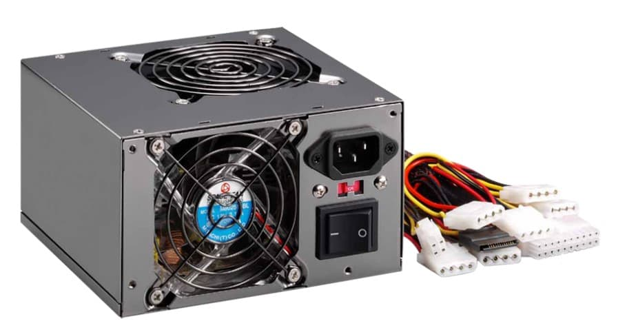
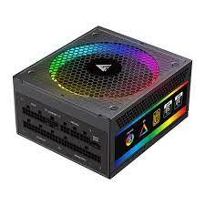

La fuente de poder, o fuente de alimentación (PSU por sus siglas en inglés), es un componente esencial en una computadora, ya que se encarga de convertir la corriente alterna (AC) de la toma de corriente en corriente continua (DC), que es necesaria para alimentar todos los demás componentes del sistema. Su función principal es proporcionar la energía adecuada a cada parte de la computadora, garantizando que cada componente reciba la cantidad correcta de voltaje y corriente.
Las fuentes de poder están clasificadas por su capacidad de suministro, medida en vatios (W), y deben ser seleccionadas según los requerimientos de energía de los componentes que alimentan. Una fuente de poder de mayor capacidad es necesaria para sistemas con hardware de alto rendimiento, como procesadores potentes y tarjetas gráficas avanzadas. Además, las fuentes de alimentación pueden ser modulares, semi-modulares o no modulares, lo que se refiere a la capacidad de desconectar o conectar los cables de alimentación. Las fuentes modulares permiten una mejor gestión de cables, facilitando el flujo de aire dentro del gabinete y mejorando la estética del montaje.
La eficiencia de una fuente de poder también es un aspecto crucial, generalmente clasificada por el estándar 80 PLUS, que indica cuán eficientemente convierte la energía de AC a DC. Fuentes con certificación 80 PLUS Bronze, Silver, Gold, Platinum o Titanium ofrecen una eficiencia creciente, lo que se traduce en menos energía desperdiciada y, en última instancia, en menores costos de electricidad y menos generación de calor.

Es importante considerar la calidad y la reputación de la marca al elegir una fuente de alimentación, ya que una fuente de mala calidad puede causar inestabilidad en el sistema o incluso dañar otros componentes.
Marcas de fuentes de poder: Las marcas más reconocidas en el ámbito de las fuentes de alimentación incluyen Corsair, conocida por su amplia gama de fuentes eficientes y de alto rendimiento, como las series RM y RMx; Seasonic, que destaca por su calidad y durabilidad, ofreciendo modelos como Prime y Focus; EVGA, que proporciona buenas opciones de rendimiento con su línea SuperNOVA; Thermaltake, que combina diseño y funcionalidad en modelos como Toughpower; y be quiet!, reconocida por su enfoque en la reducción de ruido y eficiencia, con series como Straight Power y Dark Power.
Volver